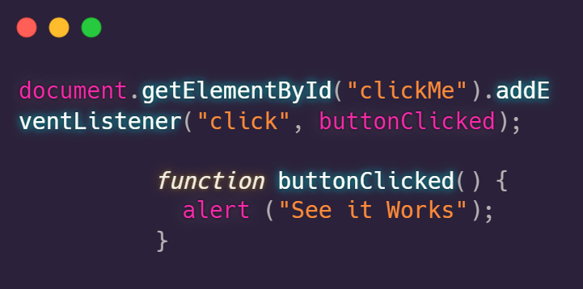
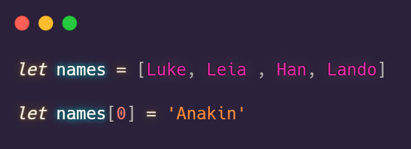
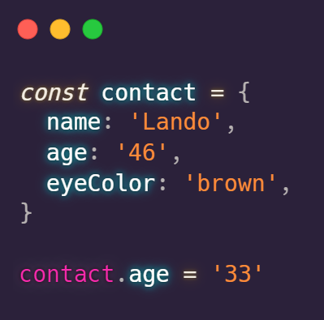

A useful way to think of HTML and CSS is as the roles of the builder and the artist. HTML provides the structure and framework. Then CSS adds the colors, size essentially the style. Then there is javascript the magician. Javascript is the wizard that allows the creation to come to life. HTML and CSS can build the frankenstein but then they need javascript to pull the lever and put life force into the creation. Javascript brings the ability to have interactive elements to webpages. It gives us the ability to add, interactive maps, animations and updated information without the need to update the browser.
Control flow is the way in which the computer will run code. Unless it comes across across a statement that tells it otherwiseit will run from top to bottom. Which is great it means we know what order to write things to get the computer to run them in the order we want. Lets take an everyday example to demonstrate. Lets make a sandwich.
When done in this order from top to bottom we make a sandwich. Written this way the computer can understand aswell. It will follow the process and produce the perfect sandwich.
So we know that we can write it out in that order to make a sandwich but what if we want to make another? Well we can write it all out again but what if we need 50? this is where loops are very useful. Loops allow us to repeat a certain piece of code in the control flow usually until a certain condition is met In this case we would want that condition to be 50 sandwiches.
The DOM is the Document Object Model. The DOM is how javascript interacts with a site by turning a web page into a tree of objects. By creating the model, we can use javascript to call on and interact with different parts of the web page. One useful way that we can interact with the DOM is to make our website interactive in certain ways. For example the code below tells the webpage to display an alert when the button is clicked.
Arrays Arrays are a way if storing data. An array is a series of elements. Each is holding a single item of data. It is a way of creating a variable that can store multiple values. The image below shows an array called names which contains a list of names. To access one of the names we write the variable and corresponding place in the array arrays start counting from 0. In the image below we wanted to change the first name in the list from luke to Anakin. So we needed to access the array "names" and then [0] to tell the computer that we just want the first name.
Objects Objects are another way to store data. Similar to arrays they allow you to store multiple values using dfferent keys In the example below we have created a variable on contact. The key of name holds the string 'Lando'. We also have keys for age and eye color. we use the name of the object 'contact' and the key 'age' in order to acces and manipulate the data. In the example below we changed age from 46 to 33.
A function is a way of running a certain set tasks in order. A function can be given an input. Functions are exteremly useful as they allow us to not repeat ourselves when coding. Once a function has been created it can be called on again and again. Which is great, if we go back to our earlier example of creating a sandwich. We could imagine that we work in a sandwich shop. The function is basically the recipe for how to make a sandwich. We can give the function slightly different inputs like Ham or tomato sandwich so that we get different results but we can use the same basic function/recipe to make all of our sandwiches.